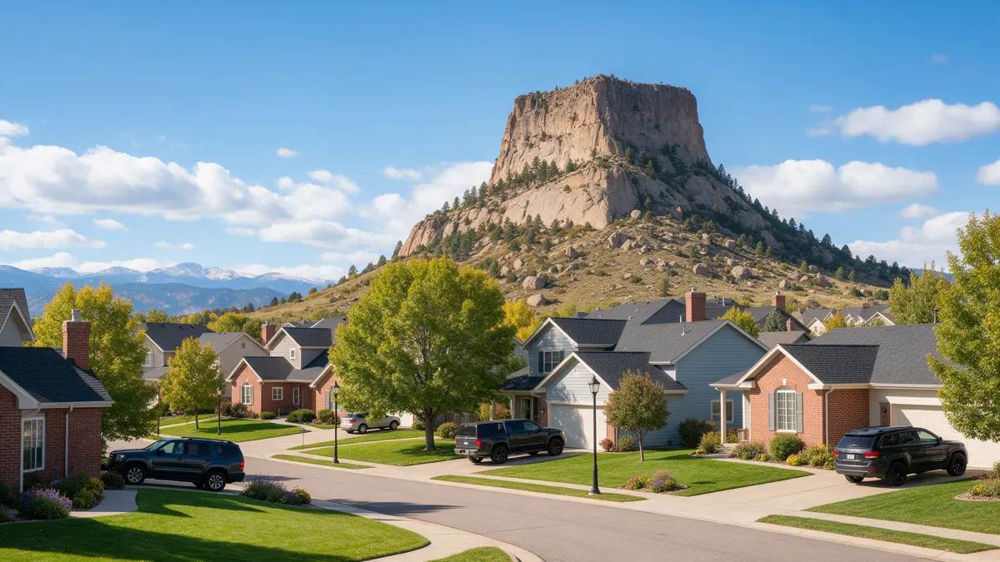

Plumber Castle Rock CO: A Practical Leak Handbook

If you need a plumber in Castle Rock CO, a calm first response saves a lot of grief. Between downtown near Wilcox Street, the neighborhoods along Plum Creek and the rural stretches toward Sedalia and Franktown, homes here vary widely. This handbook lists the first steps, the signs worth watching and good questions to ask. Plumbing Pros Colorado is a referral line connecting you with independent plumbers.
The first ten minutes
Close the main shutoff, which is often near the water heater, in a garage or in a basement utility area. Open a faucet at the lowest point and shut off power to the water heater if the leak is nearby.
Clear the area, photograph the damage and keep a short log. If water is coming through a ceiling, place a bucket and puncture nothing unless the ceiling is clearly bulging and it is safe to do so.
Know which way your valve turns and whether it is a lever or a wheel. Lever valves close with a quarter turn, which makes them quick in a crisis.
Signals your system needs attention
- hammering when a faucet shuts
- pressure gauge reading high
- drips from the water heater relief pipe
- stained drywall below a bathroom
- hot spot on the floor
- toilet that fills by itself
Hammering and high pressure are worth a closer look. Pressure that is too high can wear fittings and supply lines, and many homes in newer parts of Castle Rock rely on a pressure reducing valve to keep it in check.
A gauge that reads high at night, when demand is low, may point to a regulator that is not doing its job. Write down what you see.
How diagnosis usually works
A plumber may check pressure with a gauge, inspect the water heater and look at supply lines. When nothing is visible, acoustic equipment or thermal imaging can find the source behind walls.
For drains, a camera inspection can find a bad joint or a belly in the line. Homes near Philip S. Miller Park or the older streets downtown may have different pipe than the newest subdivisions.
Ask whether a pressure test was done and what the reading was. That number helps you track the system over time.
Repair, replace or monitor
Some problems, like a worn supply line, are simple to fix. Others, like repeated pinhole leaks in one run, may suggest the pipe itself is the issue. Ask the plumber to show you the failed part.
If a leak turns out to be from settling, ask what has changed in the soil around the house. Expansive clay in the area can move seasonally and strain buried lines.
If you are a new owner, ask the plumber what to monitor in the first year, since settling is common in recently built homes.
Preventing repeat trouble in Douglas County
Look at water heaters yearly and flush sediment if the manufacturer recommends it. Replace old braided washing machine hoses and check under sinks twice a year.
Before a cold snap, disconnect hoses and protect exposed pipes. Wind off the Palmer Divide can drive temperatures down quickly, and garages and crawlspaces suffer first.
A short checklist taped inside a cabinet door, with the shutoff location and your plumber's details, helps everyone in the household.
What the Palmer Divide adds
Castle Rock sits on the Palmer Divide between Denver and Colorado Springs, a spot known for sharp weather swings. Late spring snows and fall freezes can arrive with little warning, and irrigation, hose bibs and garages are usually first to feel it.
Growth here has been rapid, with homes of different ages sitting a few blocks apart. Near Castlewood Canyon and out toward Sedalia, some properties are not on town service at all, so confirm how your water arrives before you call.
If you are building or buying, ask the plumber about the items that matter most in a newer house: pressure setting, shutoff locations, water heater type and the condition of exterior hose bibs. Those basics prevent many of the leaks homeowners meet in their first few winters.
Frequently asked questions
What causes a water heater to leak?
Common causes include a failed connection, a faulty relief valve or tank corrosion. A leak from the tank body typically means replacement. Heaters vary in age and type, so tell the plumber the brand and approximate age if you know it.
Is hammering in the pipes dangerous?
It can wear fittings over time. A plumber can check pressure, add or adjust a regulator and look at securing loose pipes. A noisy line often points to pressure or loose strapping, and both are manageable once identified.
Do I need to winterize an irrigation system?
Yes, in most Colorado yards. Water left in lines can freeze and crack them. Many homeowners schedule a blowout in fall. Plan for the irrigation blowout in October, before the first freeze.
How do I find a slow leak in a toilet?
Add a few drops of food coloring to the tank. If color shows up in the bowl without flushing, the flapper is leaking. Color in the bowl means the flapper is worn, and replacing it is a simple repair that saves water.
Can you connect me in Parker or Larkspur?
The referral line works with independent plumbers around Douglas County. Share your town and the match will take it into account. Outlying areas can be different from town service, so share whether you are on a municipal supply or a well.
Plumbing services in Castle Rock
- Water Leak Repair
- Emergency Plumbing
- Drain Cleaning
- Water Heater Services
- Sewer Line Repair
- Gas Line Services
- Slab Leak Repair
- Pipe Repair & Replacement
- Toilet Repair
- Bathroom Plumbing
Nearby Colorado cities
- Water leak repair in Littleton
- Water leak repair in Morrison
- Water leak repair in Denver
- Water leak repair in Evergreen
Ready to talk to someone? Call (720) 794-0974 or visit get a Front Range plumber on the line.